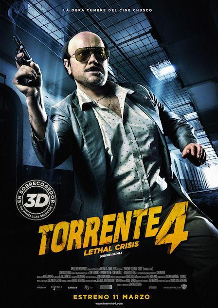
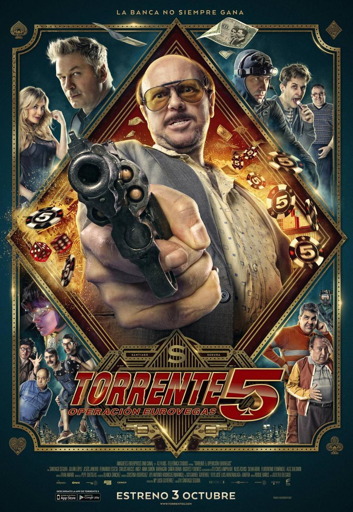

Torrente 1

Torrente, el brazo tonto de la ley (1998) es una comedia española dirigida y protagonizada por Santiago Segura. La película sigue a José Luis Torrente, un policía corrupto, machista y patético que se enfrenta a un caso criminal mientras navega entre su incompetencia y su excéntrico entorno. Llena de humor ácido y sátira social, es una crítica a la cultura española de la época.
Torrente 2

Torrente 2: Misión en Marbella (2001) es la secuela de la comedia de Santiago Segura. Esta vez, Torrente, ahora un ex policía arruinado, se traslada a Marbella, donde se involucra accidentalmente en una trama terrorista para detonar la ciudad. Con su torpeza habitual y rodeado de personajes estrafalarios, intenta detener el complot mientras aprovecha cualquier oportunidad para sacar provecho personal. Llena de humor irreverente y situaciones disparatadas, sigue el estilo absurdo de la primera entrega.
Torrente 3

Torrente 3: El protector (2005), dirigida y protagonizada por Santiago Segura, sigue las desventuras del desastroso ex policía José Luis Torrente, quien esta vez es asignado como guardaespaldas de una política amenazada de muerte. Con su habitual torpeza, Torrente se ve envuelto en una trama de conspiraciones internacionales mientras sigue exhibiendo su característico humor grotesco y políticamente incorrecto. La película mantiene el tono absurdo y satírico que define la saga.
Torrente 4

Torrente 4: Lethal Crisis (Crisis letal) (2011) es la cuarta entrega de la saga de Santiago Segura. En esta ocasión, Torrente es acusado injustamente de un crimen y termina en prisión, donde intenta sobrevivir y planear una fuga junto a un grupo de presos tan incompetentes como él. La película sigue con el característico humor irreverente y exagerado de la serie, combinando situaciones absurdas con un elenco lleno de cameos de figuras populares en España. Es además la primera de la saga rodada en 3D.
Torrente 5

Torrente 5: Operación Eurovegas (2014) es la quinta y última entrega de la saga dirigida por Santiago Segura. En esta ocasión, Torrente, recién salido de prisión, planea un gran atraco en un lujoso casino junto a un grupo de delincuentes tan ineptos como él. Ambientada en un futuro cercano tras la salida de España del euro, la película mantiene el humor grotesco, los cameos de celebridades y la crítica social que caracteriza la saga, combinando acción y comedia en una parodia de las películas de atracos.